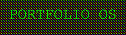
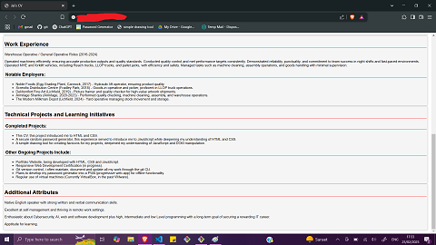

Projects
Welcome to my projects page! Here, you'll find a collection of my latest work in web development, cybersecurity, and software engineering. Each project showcases my skills, creativity, and dedication to continuous learning and improvement.
Portfolio Website

This website showcases my skills in web development, design, and content creation. Built using HTML, CSS, and JavaScript, it features a responsive design, interactive elements, and a retro computing aesthetic inspired by TempleOS. It serves as a platform to display my projects, share my journey into tech, and connect with potential employers and collaborators. It reflects my commitment to continuous learning and my passion for creating functional and visually appealing web applications.
Simple Drawing Tool

This project is a simple drawing tool designed for creating pixel art and favicons. It allowed me to delve deeper into JavaScript, particularly in DOM manipulation and event handling. The tool features a user-friendly interface where users can select colors and draw on a grid canvas. This project helped me enhance my understanding of JavaScript and its practical applications in creating interactive web tools.
View on GitHubRandom Password Generator

The Random Password Generator is a tool that generates secure, random passwords based on user-selected criteria such as length and character types. This project enabled me to deepen my understanding of HTML and CSS, and introduced me to JavaScript. I learned how to implement logic for generating random characters and ensuring the generated passwords meet the specified criteria. This project also emphasized the importance of security in web development.
View on GitHubHTML/CSS Professional CV

This project involved creating a professional CV using HTML and CSS. It was my first project and served as an introduction to web development. The CV is designed to be clean, responsive, and visually appealing. It highlights my skills, experience, and education in a structured format. This project not only helped me secure my first tech interview but also improved my chances of getting shortlisted for various opportunities. It laid the foundation for my journey into web development.